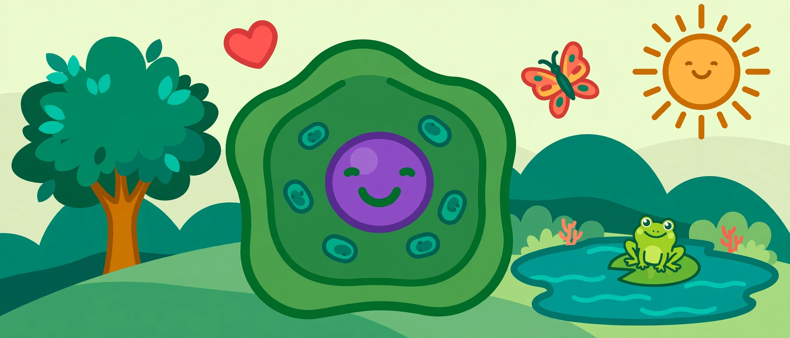

Discover how living things work — tiny cells, busy ecosystems, your amazing body, growing plants and wild animals. Pick your grade level, choose a topic, and earn stars as you explore. There are no timers and no losing: every try teaches you something new.
Earn Stars mode: answer questions to collect up to 3 stars per topic game. Stars are saved on this device.